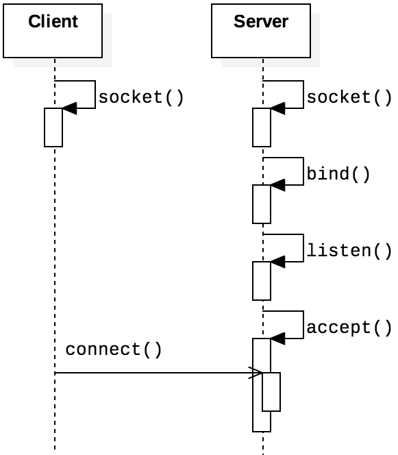
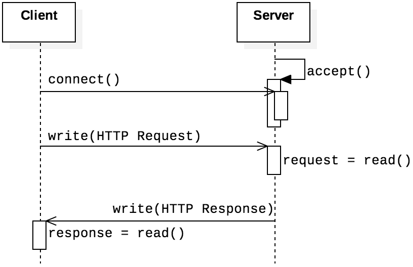
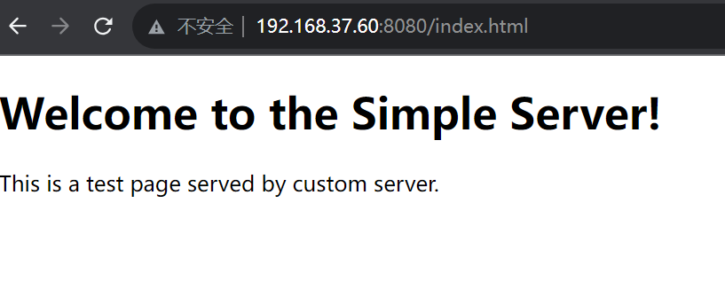
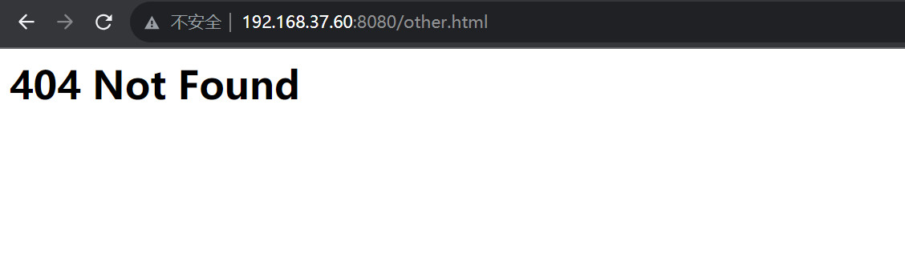

In this lab, you will need to complete relevant content in network programming. You need to implement four specific functions: web server, ICMP tunneling, packet sniffing, packet analysis, and packet spoofing.
You should download this source code to start with.
When you finished the lab, zip you code files with file name ID-lab-3.zip (e.g., SA19225111-lab-3.zip), and submit it to Online Teaching Platform. The deadline is TBA (Beijing time). Any late submission will NOT be accepted.
In this Part, you need to implement a square server. The server should be capable of returning the square of a number when the client inputs a number. And when the client inputs "bye," the client should disconnect from the server. To begin, you will learn how to use certain relevant system calls:
The socket interface in C provides a mechanism for setting up a communication channel to another host system. For both clients and servers, the initial function call is the same.

Processes call socket() to request a new socket instance from the OS. As with other forms of IPC such as pipes, sockets are treated as files, so the process receives a file descriptor from the return value. If the socket creation failed, the OS returns a negative value.
/* defined in sys/socket.h */
int socket(int family, int type, int protocol);
The domain field is used to declare the intended scope of routing needed; different values here indicate whether the socket will be used for IPv4, IPv6, or local communication. The type field determines whether the socket will read and write data as a byte stream, fixed-size messages, or as unprocessed (raw) data. The protocol field is typically unused and set to 0
| Field | Constant | Purpose |
|---|---|---|
| domain | AF_INET | Use for HTTP IPv4 addresses |
| AF_INET6 | Use for HTTP IPv6 addresses | |
| AF_LOCAL | Unix domain socket for HTTP IPC | |
| AF_NETLINK | Netlink socket for HTTP kernel messages |
Once a client process has created a socket, the next step is to build the socket address structure and to establish a connection with the socket at the server host. The client is primarily concerned with specifying the IP address of the server and the associated port number. In the case of a connection-less protocol like UDP, this step does not actually involve contacting the server; rather, this step just involves configuring the socket’s peer IP address.
/* defined in sys/socket.h */
int connect (int socket, const struct sockaddr *address, socklen_t address_len);
Once the address information is established, it can be passed to the connect() function to establish the initial connection to the socket at a server address, so long as it is accepting requests. If TCP is the transport layer protocol used, connect() will send an initial message to the server host process to initiate the TCP 3-way handshake, making the server aware of the connection. If UDP or another connectionless protocol is used, connect() simply sets the IP address of the peer in the client host’s socket.
int setsockopt (int socket, int level, int option_name, const void *option_value, socklen_t option_len);
int bind (int socket, const struct sockaddr *address, socklen_t address_len);
Setting up the server socket involves a different sequence of steps from the client process. the process should make a sequence of function calls to become a server. Typically (though not required), the first call is to setsockopt() to configure the socket with the SO_REUSEADDR option. This option avoids a common error during the next step, bind(). The bind() call links the port number with the current process. Sometimes when a port number is reused, a timing problem can cause the previous process (which is no longer running) to fail to release the port fully. Setting the SO_REUSEADDR option tells bind() to ignore this and forcefully replace the port association.
int listen (int socket, int backlog);
int accept (int socket, struct sockaddr *address, socklen_t *address_len);
Connection-oriented TCP sockets require two additional function calls. The first, listen(), converts the socket to a connection-oriented server socket with a designated request queue. The second parameter, backlog, can be used to modify the maximum number of enqueued connection requests. Once the process has converted its socket to a server socket, repeated calls to accept() establish connections with incoming requests. The accept() function is blocking, so the process will wait at that point until a new request comes in. When a new request arrives, accept() performs the server side of the 3-way handshake to establish the connection, storing information about the client in the address and address_len fields.
In this experiment, square-client.c and square-server.c are supplemented to realize square server, we've already shown some of the code. You should first start square-server.c, and then run square-client.c. The result is as follows:
css-lab@tiger:~$ make square-server
gcc square-server.c -o square-server.out
./square-server.out
Server is listening on port 12345...
Accepted connection from 127.0.0.1:42852
Received from client: 5
Sent to client: Square: 25
Received from client: 25
Sent to client: Square: 625
Received from client: -1
Sent to client: Square: 1
css-lab@tiger:~$ make square-client
gcc square-client.c -o square-client.out
./square-client.out
Connected to server. Enter 'bye' to exit.
Enter a message: 5
Server response: Square: 25
Enter a message: 25
Server response: Square: 625
Enter a message: -1
Server response: Square: 1
Processes running at the application layer of the protocol stack are not fundamentally different from non-networked concurrent applications. The primary differences between such distributed application processes and non-networked processes are that the data is exchanged via an IPC channel based on a predefined communication protocol, and that channel has a significantly higher likelihood of intermittent communication failures. In this section, we will demonstrate how to use TCP sockets to implement the basic functionality of HTTP, the protocol that underlies web-based technologies.
HTTP is the protocol that defines communication for web browsers and servers. Readers who have built personal or professional web pages have relied on this protocol, even if they were unaware of the details of its operation. HTTP applications use TCP connections for their transport layer.and the figure shows the basic structure of HTTP in relation to the functions that establish the socket connection. The client—a web browser—sends an HTTP request to the server and receives a response.
In this experiment, we have already implemented the GET request and completed a simple index.html file. You need to place index.html in your system (recommended in the root directory). You can then access it through your browser. First, you need to know your server's IP address:
css-lab@tiger:~$ ifconfig
eth0: flags=4163<UP,BROADCAST,RUNNING,MULTICAST> mtu 1500
inet 192.168.37.60 netmask 255.255.240.0 broadcast 192.168.47.255
inet6 fe80::215:5dff:fe9b:2b4e prefixlen 64 scopeid 0x20
ether 00:15:5d:9b:2b:4e txqueuelen 1000 (Ethernet)
RX packets 98802 bytes 62267057 (62.2 MB)
RX errors 0 dropped 0 overruns 0 frame 0
TX packets 63864 bytes 17556137
TX errors 0 dropped 0 overruns 0 carrier 0 collisions 0
You can make requests in your browser using your IP address and the port number occupied by the web server:

curl "http://192.168.37.60:8080/index_$(printf 'a%.0s' {1..1500}).html?"
When you input a non-existent file, you will receive an error message:
Now, you need to supplement the rest of the content in web-server.c:
With raw sockets, we can capture all IP packets sent to the local machine (including IP headers and TCP/UDP/ICMP headers) and all frames received by the local machine (including data link layer protocol headers). A common socket cannot process network packets such as ICMP and IGMP, but SOCK_RAW can. With raw sockets, we can construct our own IP headers.
Other sockets like stream sockets and data gram sockets receive data from the transport layer that contains no headers but only the payload. This means that there is no information about the source IP address and MAC address. If applications running on the same machine or on different machines are communicating, then they are only exchanging data.
The purpose of a raw socket is absolutely different. A raw socket allows an application to directly access lower level protocols, which means a raw socket receives un-extracted packets(the process is as following graph). There is no need to provide the port and IP address to a raw socket, unlike in the case of stream and datagram sockets.

In this experiment, we need to obtain all types of packets from the MAC layer, so when constructing the socket, the first parameter is selected as AF_PACKET, indicating that the data to be obtained starts from the data link layer. The construction format is as follows:
int sock = socket(AF_PACKET, SOCK_RAW, htons(ETH_P_ALL));
You should search more information by yourself to learn the usage of different parameters of socket function above. for example : https://zhuanlan.zhihu.com/p/59327439.
In this section, we will implement an ICMP tunnel with the help of raw sockets.
The firewall of computer will inspects and filters network packets, deciding whether to allow or deny the transmission of packets based on defined rules and policies.For example, firewall sometimes blocks access to some ports. However, general firewalls do not block the ICMP protocol (ping packets). Therefore, we can bypass the firewall for network communication by establishing an ICMP tunnel.
ICMP(Internet Control Message Protocol) is used to send control messages in TCP/IP networks, providing feedback on various problems that may occur in the communication environment. The packets format of ICMP is:

The types of ICMP protocols are divided into two categories, query packets and error packets. And there are two types of query packets, Echo request and Echo reply. When you send a Echo request packet to an IP, it will reply with a Echo reply packet, which is how the ping command works:

We can find the structure describing ICMP in netinet/ip_icmp.h
struct icmphdr
{
uint8_t type; /* message type */
uint8_t code; /* type sub-code */
uint16_t checksum;
union
{
struct
{
uint16_t id;
uint16_t sequence;
} echo; /* echo datagram */
uint32_t gateway; /* gateway address */
struct
{
uint16_t __glibc_reserved;
uint16_t mtu;
} frag; /* path mtu discovery */
} un;
};
With this, we can easily construct ICMP packages. ICMP messages have an optional data field, which means we can put the information here, and use Echo request to implement network communication.
In main.c, we forked a child process for receiving ICMP packets first.
We use the following structure to organize the data segments:
typedef struct icmp_tunnel
{
unsigned char sname[NAMESIZE];
unsigned char dname[NAMESIZE];
unsigned char data[BUFFSIZE];
}tunnel;
We will put this structure in the data segment of the ICMP packet
and send it to the specified IP with the type Echo request.
If the other host is online, it can receive the message we sent, and likewise,
we can also receive the message sent by the other, so ICMP
tunnel communication can be achieved.
-----------------------------------------------------------------------
|css-lab@tiger:~$ sudo ./icmp |css-lab@tiger:~$ sudo ./icmp |
|Enter your name: H1 |Enter your name: H2 |
|Who you want to talk: H2 |Who you want to talk: H1 |
|Enter the dest IP: 127.0.0.1 |Enter the dest IP: 127.0.0.1 |
|hello! | H1 : hello! |
|I'm H1 | H1 : I'm H1 |
| H2 : hi |hi |
| H2 : I'm H2 |I'm H2 |
-----------------------------------------------------------------------
The device is connected to the network through a network interface card (NIC). A NIC is a physical or logical connection between a computer and the network. Each NIC has a hardware address, which is called a MAC address. When the NIC receives a packet from the network, it copies the packet to the memory of NIC, and checks the destination address in the header of the data frame. If the destination address matches the MAC address of the NIC, the data frame is copied to the kernel cache, and the NIC then interrupts to tell the CPU to finish processing the data.
Because the NIC discards packets that do not match its MAC address, the sniffer cannot obtain these frames. Fortunately, most network cards have a special mode called promiscuous mode. In this mode, the NIC passes each data frame it receives from the network to the kernel, regardless of whether the address matches.
In this experiment, we need to open the promiscuous mode of the local network card in the following way to obtain all data packets.Finally, Turn off promiscuous mode after use.
In this part, you need to analyze the structure of ARP, ICMP, TCP, and UDP packets and print detailed information of them. Refer to the ICMP analysis function given in PacketProcess.h and packetProcess.c to complete the analysis function of the remaining three packets.
When doing network sniffing, sniffers are often only interested in certain types of packets, such as TCP packets. Therefore, after the packet is captured by the MAC layer, you need to implement filtering functions to filter out some uninteresting packets.
Check the filter.h for details of the function declarations. Refer to the given function filterByIpAddress() and filterByMacAddress(), please complete filter by protocol type, and port number. Run your program to check if it works correctly.
In this experiment, you need to use two virtual machines, Host A and Host B. Host A is used to send the forged packet and host B is used to receive the packet.
We have given a program for forging ICMP datagrams. Run this program and use partC network sniffer to capture packets.
Refer to this program to complete the forgery of UDP and ARP packets.
Forge an ARP packet on host A to request the MAC address of host B. After using the partC network sniffer to capture packets on host B, you can capture the ARP packet. You can view and analyze the details about the packet in the partC network sniffer.
On host A, forge a UDP packet which destination IP address is host B. After the preceding code is run, the packet are captured on host B. You can view and analyze the details about the packet in the partC network sniffer.
Forge a SYN packet on host A and send it to host B for establishing a TCP connection. If you use the partC network sniffer to capture packets on host B, you can capture the SYN packet and the reply packet sent by host B. You can view and analyze the details about this two data packets in the partC network sniffer.
Happy hacking!